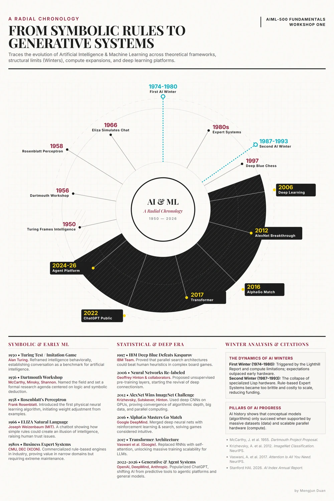

Unique Value
A chronology built around patterns, not isolated dates.
The radial design shows repeated cycles of ambition, constraint, renewed methods, stronger infrastructure, and social responsibility.
Selected Work / 01
A visual history of AI and machine learning from 1950 to 2026.

This visual timeline traces the development of artificial intelligence and machine learning from early questions about machine intelligence to the current era of generative systems, frontier models, cloud infrastructure, and AI governance.
I selected it for the portfolio because it makes a long technical history accessible to beginning learners while showing my research synthesis and visual communication skills.
The artifact brings milestones including Turing's imitation game, the Dartmouth workshop, perceptrons, ELIZA, AI winters, expert systems, Deep Blue, deep learning, AlphaGo, transformers, and ChatGPT into one radial chronology.
The timeline was revised for classmates, beginning AI/ML learners, and professionals who need a concise orientation before exploring individual technologies in more depth.
The objective was to help a new AI/ML learner see the pattern behind the dates. Progress depends on research ideas, data, computing power, funding, practical use, governance, and public trust moving together.
The radial structure presents AI history as a connected cycle rather than a straight line. It keeps periods of optimism, constraint, renewed methods, infrastructure growth, and social responsibility in the same composition.
Unique Value
The radial design shows repeated cycles of ambition, constraint, renewed methods, stronger infrastructure, and social responsibility.
Relevance
The artifact supports class discussion, professional learning, and quick orientation while demonstrating research synthesis and audience-focused communication.